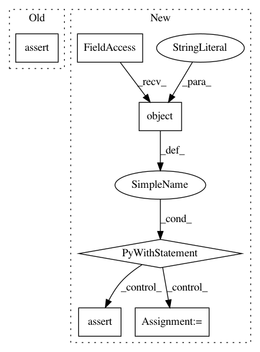

219e29442e44b5d16488d946574cf6030eaa4d52,tests/store/tracking/test_abstract_store.py,,test_list_run_infos,#,110
Before Change
with mock.patch.object(AbstractStoreTestImpl, "search_runs", return_value=runs):
store = AbstractStoreTestImpl()
assert store.list_run_infos(experiment_id, view_type) == run_infos
store.search_runs.assert_called_once_with([experiment_id], None, view_type)
def test_search_runs():
After Change
run_infos = [mock.Mock()]
runs = [mock.Mock(info=info) for info in run_infos]
with mock.patch.object(AbstractStoreTestImpl, "search_runs",
return_value=PagedList(runs, None)):
store = AbstractStoreTestImpl()
result = store.list_run_infos(experiment_id, view_type, page_token=token)
for i in range(len(result)):
assert result[i] == run_infos[i]
assert result.token is None
store.search_runs.assert_called_once_with([experiment_id], None, view_type,
SEARCH_MAX_RESULTS_DEFAULT, None, token)
def test_search_runs():
experiment_id = mock.Mock()
view_type = mock.Mock()
runs = [mock.Mock(), mock.Mock()]
In pattern: SUPERPATTERN
Frequency: 4
Non-data size: 6
Instances
Project Name: mlflow/mlflow
Commit Name: 219e29442e44b5d16488d946574cf6030eaa4d52
Time: 2020-08-06
Author: trangevi@microsoft.com
File Name: tests/store/tracking/test_abstract_store.py
Class Name:
Method Name: test_list_run_infos
Project Name: cornellius-gp/gpytorch
Commit Name: 7a9a92b3e141bae9b426084cfd3f37add009c590
Time: 2020-07-17
Author: balandat@fb.com
File Name: test/lazy/test_kronecker_product_added_diag_lazy_tensor.py
Class Name: TestKroneckerProductAddedDiagLazyTensor
Method Name: test_if_cholesky_used
Project Name: cornellius-gp/gpytorch
Commit Name: 7a9a92b3e141bae9b426084cfd3f37add009c590
Time: 2020-07-17
Author: balandat@fb.com
File Name: test/lazy/test_kronecker_product_added_diag_lazy_tensor.py
Class Name: TestKroneckerProductAddedDiagLazyTensor
Method Name: test_root_inv_decomposition_no_cholesky
Project Name: pantsbuild/pants
Commit Name: eca2c7192ef13b239bd2e387cb5759c5acf9e558
Time: 2015-07-23
Author: kwilson@twopensource.com
File Name: tests/python/pants_test/pantsd/test_process_manager.py
Class Name: TestProcessManager
Method Name: test_is_alive